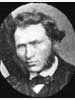
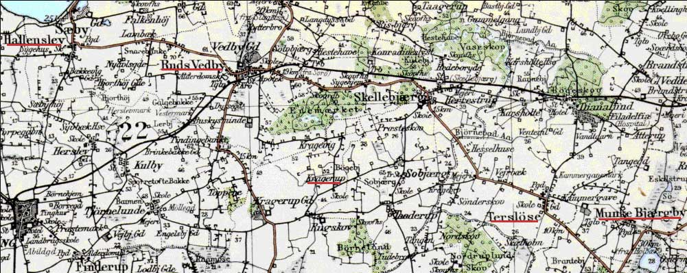
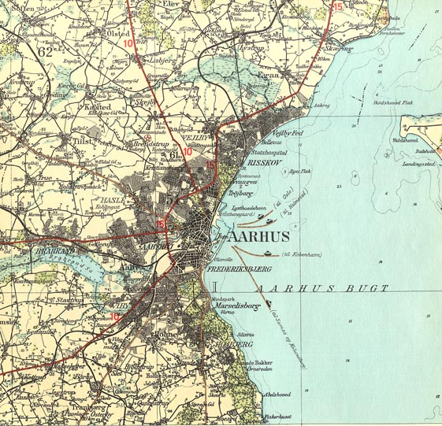
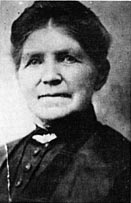

Hans Sorensen Family Information and Photos
Home
Histories
Charts
Photos
Maps
Restricted
News
Info
Contact
1 2 2Hans Henrick Sorensen, Ane Nielsen  and Mathilda Torgersen Evensen |
History of Hans Hendrik Sorensen
History of Hans Hendrik Sorensen, written by Wallace Sorensen and Lora Day, grandson and granddaughter of Hans Sorensen.
Hans Sorensen was the 2 October 1825, at Kragerup, Orslev, Holbaek, Denmark. He and his family heard the Gospel for the first time in the winter of 1857. The gospel had just been brought to Denmark, and at Christmas time, 1857, they accepted it. In Feb. 1858 the ice was broken with an ax in order that they could be baptized. They were living at the time at Slagelse, on the same island, Sjaelland, as Copenhagen, Denmark. In about the year 1860 they moved to Jylland thinking they could get away from the persecution of the Mormon Saints, but as the Church grew, persecution grew also, and they endured many trials and hardships those first years.
Hans Sorensen was ordained to the office of Elder in the priesthood and he worked and preached faithfully in his native land for many years. He was a talented speaker and he had a gift for expressing himself so that many listened to him. He was a stone cutter and mason by trade, but for many years in that country, it was hard to get rock for building purposes, consequently he had to go into the woods and dig deep into the earth to find rock, or go in a boat out on the ocean and draw them up out of the water. He was always a very busy man and a hard worker.

In the year 1865 or 1866 the family was living about four miles from the city of Aarhus, close to the beautiful woods. The Elders came often to their home and they were always welcome. The Elders prevailed on Hans Sorensen and his family to move to Aarhus and live with them at their headquarters. This they did and grandmother kept house and cooked for the Elders. Grandmother was a very wonderful cook, having cooked for wealthy families when she was young, before she was married. For nearly five years grandmother worked faithfully for the Elders and they all lived happily together, during which time Grandfather labored in his calling in the Church whenever his financial circumstances would permit. The entire family enjoyed the sweet spirit of the Gospel; even when the older children had to leave home to work to help make a living.
In the year 1870, Mette Marie, the oldest daughter of Hans Sorensen, emigrated to Utah, and on 2 Jan. 1871 she married Peter Christensen in the Endowment House in Salt Lake City. His mother lived in Salina, Utah at the time.
On the 28th of June 1871], Ane (Grandmother Sorensen), daughter Caroline Sophia [pictured to the right] and son Parley Peter, left Liverpool to emigrate to Utah. Grandmother hired out to do housework in Salt Lake City to help earn money so her husband and other children could come to America, or Zion. Day after day she left her two little children and went to work. Many times she would cook pastry and sell them and many times she would iron at night to make a few extra pennies. She was an expert at ironing the stiff busomed shirts and stiff collars worn at that time. After many months of hard work and saving, her husband was sent for.
On 18th of July 1872, Hans Hendrik Sorensen and son William (anders Wilhelm) reached Utah after leaving Aarhus, Denmark [on] the 26th of June 1872, and joined their family in Salt Lake City. This was a very happy reunion, but it carried a note of sadness in that they left their oldest son Soren Peter in the old country. He had not joined the Church and did not care to come to Utah with his father.
During the first years that followed the immigration, Hans Sorensen worked on the Salt Lake Temple as a stonecutter. After leaving Salt Lake City the family moved to Glenwood, Utah. Grandfather, being a mason also by trade, built the old stone grist mill and several other buildings that were erected in Richfield at that time. Later Grandfather built the two grist mills at Glenwood. He also built the old Peterson home and many of the old substantial stone homes of Glenwood. Grandfather Sorensen also worked as stone cutter on the Manti Temple.
Grandfather was very faithful in his religion. He entered into the principle of plural marriage in his declining years. His second wife was Matilda Torgersen. She was a very sweet young girl and they raised a family of three girls and three boys all of whom the family can well be proud of.
Grandfather moved several times after living in Glenwood. He moved to Koosharem then up to Kings Meadow Canyon, where he built the little rock cabin that is partly standing. Here they were very poor and endured many hardships during the cold winter.
During the polygamy raid, Grandfather and his second wife, Matilda and children moved to Bunkerville, Nevada, his son Parley moving then out there. Here they had to start a new home and they were very poor. While living in Bunkerville, Grandfather had a partial stroke and lost his voice. In 1890 he served a term in the statpenitentiary for obeying one of the commandments of God. Both his wives were now living in Aurora. He only lived a few months after his freedom and it can truthfully be said he died a martyr to his religion, his death being caused by exposure while a prisoner.
He had eleven children. Grandfather and his two wives were buried in Aurora, Sevier County, Utah.
[End of the history]
Hans' brother Jorgen also joined the church, being baptised the same day, 5 Feb. 1858. Hans was baptized 5 Feb. 1858 by Ole Poulsen and confirmed 14 Feb. 1858 by Anders Andersen. He was ordained an Elder 11 Aug 1867 by Hans Jensen. His family came to America in 1872. Hans had five children, mentioned in the history above. Even though his son, Soren Peter refused to be part of the church, Soren Peter's daughter Sophia Christene, came to America and was married in the Manti Temple in 1906. She died in Glenwood in 1953.
When Hans' children were grown he married again starting another family through plural marriage to Matilda (Evensen) Torgersen. He had six children in that family, the last one, Alma, born in 1891 when Hans was 66 years old. Hans died a year and a half later on April 6th 1893, the very day that the Salt Lake Temple was dedicated, a temple which benefited by Hans' stone cutting talents.
Even though he only lived to be 67, he suffered and accomplished much and left a great heritage for us to cherish and follow.
References Concerning Emigration From Denmark to America
(place, date and reference follow each group listed)
name age occupation from
Jens Knudsen 26 Farmer Sloth
Ane Sorensen 47 Munkebjerg
Caroline Sophie Sorensen 11 Torbegom
Peder Parley Sorensen 4 Molsgaard
[Aarhus Conf. 23 Jun 1871, Emig.S.M.- film 025696]
Hans Sorensen 46 Stone Cutter Aarhuus
Anders Wilhelm Sorensen 17 Aarhuus
[Aarhus Conf. 28 Jun 1872 on "Nevada", Emig.S.M.- film 025696]
Jorgen Sorensen 56 Lab Kragerup
(Hans' brother)
Karen Sorensen 56 Sonderod
Mette Marie Sorensen 18 Love
[Copenhagen Conf. 30 Aug 1872 on "Minnesota", Emig.S.M.- film 025696]
The following is from Dorothy Day MacNiven:
Emigration, Hans Sorensen Family
Ane, Caroline Sophia and Parley Peter emigrated in 1871; Hans and Andrew emigrated in 1872. They sailed in church chartered ships.
The Minnesota, sailing from Liverpool, England on June 28, 1871, passenger list shows Ane Sorensen (spelled Anne) and then the names Caroline and Peter. Except for age, the columns across the page were not filled out. This is on page 160.
Ane's age was listed as 47. If we have her birthdate right, she would have been 48 that June when they sailed. Caroline, who would have been 13 was listed as 11; Peter, who would have been 9 was listed as 4.
The Minnesota was a 2000 ton ship. That isn't very large. The man who collected the fares and paid for the emigrant company was W. W. Cluff. The ship's agent was Albert Carrington.
The fares for this passage were 6 pounds 10 shillings for adults and 3 pounds 3 shillings for children. The railroad fare from New York to Salt Lake City (also given in the passenger summary) was 9 pounds 16 shillings for adults and 4 pounds 18 shillings for children -- much more than the ocean fare.
The Nevada sailed form Liverpool June 26, 1872. The passengers list shows Hans Sorensen (spelled Sorrensen) and under his name is Anders, son. Hans was listed as age 46. He would have been 47 in October of that year but not yet in June when he sailed. Anders was listed as 17. He would have been 17 in November. This is on page 216.
The Nevada was a 3100 ton ship. The ship's agent was Albert Carrington.
The fare from Liverpool to New York, which Hans and Andrew would have paid, was 6 pounds 6 shillings for adults. The railway fare for adults to Salt Lake City from New York was 9 pounds 16 shillings. William's history says they reached Salt Lake City 18th July 1872.
Gen. Soc. 025692 Emigration for Utah, Ships passengers Lists, 1863-1876.
Note: For roster of Scandinavian saints who sailed the Minnesota Jun 28, 1871, see library book 1063 pp. 13-24.
Note: A poignant account of Hans' and Anders' emigration and arrival in Salt Lake City is given in William Sorensen's history, pp. 2, 3.
From Dorothy Day MacNiven, Norman, Oklahoma 73069